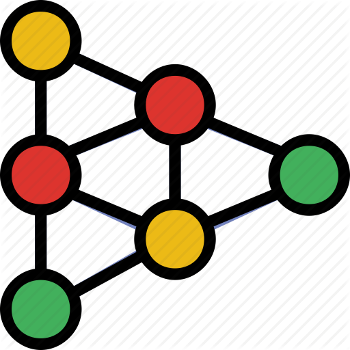
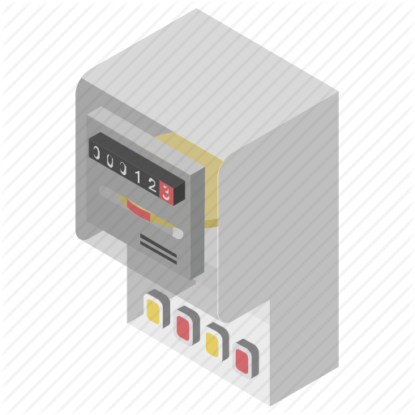

Proposta de Projeto P&D
Novembro de 2018
Proposta de P&D à Eletra Energy
Blockchain Aplicado a Medidores Elétricos Inteligentes
Um pouco de História
A história do blockchain está diretamente ligada à história da mais famosa criptomoeda, o bitcoin, que foi lançada em 2009 pelo misterioso Satochi Nakamoto que até hoje não teve sua identidade descoberta.
Um pouco de conceitos
E, o mais importante, o bitcoin está baseado na utilização do blockchain, que, de forma bastante simplificada é:
Um Shared Ledger, ou livro de registros compartilhados, em que, uma vez inserido um registro, este se torna imutável.
Um pouco de conceitos
A arquitetura do blockchain permite aos participantes a habilidade de compartilhar o livro de registros, que é atualizado por meio de uma replicação ponto-a-ponto, toda vez que uma nova transação acontece.
Quais as vantagens?
Com essas propriedades, a adoção do blockchain em diferentes setores pode significar:
- Economia de tempo: de dias, para transações quase instantâneas;
- Redução de custos: eliminação de custos operacionais e de intermediários;
- Redução de riscos: mitigação de fraudes, adulterações e outros crimes cibernéticos;
- Aumento da confiança: processos e registros compartilhados com segurança.
Quais as vantagens?
Aplicações do Blockchain
Iniciativas no setor elétrico
Notícias
Empresas do setor de energia investem 300 milhões de dólares em 2017 para aplicações em blockchain
Relatórios
Principais iniciativas de blockchain para setor elétrico são voltadas para compra e venda de energia
Iniciativas Mundialmente Conhecidas
Potenciais aplicações no setor elétrico
- Controle de fluxo e armazenamento de energia no ambiente de integração de energia renovável;
- Monitoramento e gestão de ativos da rede;
- Levantamento de fundos para energia renovável e respectiva remuneração dos participantes via emissão de tokens;
- Uso de criptomoedas para pagamento de fornecimento de energia;
- Emissão de certificados de energia renovável com garantia de origem;
- Sistema de billing e segurança para estrutura de recarga de veículos elétricos e smart meters (inclusive medidores pré-pagos);
- Compra e venda de energia descentralizada:
- No atacado;
- No mercado de pequenas gerações distribuídas.
Conclusões Preliminares
O uso da tecnologia blockchain no setor elétrico tem crescido exponencialmente nos últimos dois anos, assim com a quantidade de interessados, incluindo as grandes empresas de energia;
A maior parte das aplicações estão concentradas nos novos mercados como: geração distribuída, recarga de veículos elétricos e emissão de certificados.
Proposta para P&D UFC - Eletra energy
Integração dos medidores inteligentes à placas de desenvolvimento contendo sistemas multiagentes capazes de realizar:
- leitura de dados dos medidores;
- enviar sinais de comando para acionamento de cargas, geradores, e/ou dispositivos de armazeamento de energia.
- Integrar-se a um sistema de blockchain já consolidado, utilizando smart-contracts, para efetivar transações de compra e venda de energia.
Além disso o projeto ainda contemplaria uma interface web para visualização e configuração dos dispositivos comercializadores.
Diagrama generalizado
Diagrama generalizado
Placa de Desenvolvimento

Desenvolvimento de componente de software capaz de realizar leitura dos dados coletados pelo medidor inteligente. Desenvolvimento de nó comunicante conectado ao blockchain e de smart-contracts para compra e venda de energia.
Necessário aquisição das placas e de sistema de infraestrutura de rede.
Blockchain

Busca da plataforma e das tecnologias que se adequem bem aos objetivos do projeto. Averiguação entre as principais tecnologias existentes e obtenção do conhecimento necessário à implementação dos smart-contracts de compra e venda de energia.
Necessário aquisição de recursos computacionais em nuvem e/ou em plataformas de blockchain.
Smart Meter

Estudo dos protocolos necessários para a realização de comunicação bi-direcional entre medidor e aplicação de gerenciamento de compra/venda.
Necessário aquisição de medidores inteligentes comerciais.
Web Interface
Desenvolvimento de servidor web para exibição de dados e configuração do dispositivo.
Necessário aquisição de recursos computacionais em nuvem.
Recursos energéticos distribuídos
Estudo do gerenciamento de recursos energéticos distribuídos integrados via rede de dados com possibilidade de controle e acionamento remoto com objetivo de minimização dos custos.
Para estudos mais específicos, se faz necessário aquisição de sistema de simulação Hardware-in-the-loop (HIL).
Estrutura do projeto
- 3 Professores Pesquisadores (12 horas semanais);
- 1 bolsista de doutorado (12 horas semanais);
- 1 bolsista de mestrado (12 semanais);
- 3 Bolsistas de IC (20 horas semanais).
Prazo estipulado para conslusão do projeto
30 meses (2 anos e meio).
Custo estimado para execução
Custo com aquisição de equipamento HIL: R$ 600.000,00
Custo sem aquisição de equipamento HIL: R$ 400.000,00
Metodologia para gerenciamento do projeto
Aplicação da metodologia de desenvolvimento ágil Scrum com sprints de 15 dias.
- Definição do Product Owner;
- Definição do Scrum Master;
- Definição e treinamento da Equipe;
- Elaboração do Product Backlog;
- Classificação das tarefas.
Tarefas do projeto
- Revisão bibliográfica a respeito de blockchain e suas tecnologias;
- Revisão bibliográfica a respeito de gerenciamento de recursos energéticos distribuídos;
- Estudo do medidor a ser utilizado e de suas funcionalidades;
- Estudo dos protocolos de comunicação utilizados pelo medidor;
- Montagem de bancada de testes com infraestrutura de comunicação em rede;
- Estudo de plataformas de simulação utilizando HIL;
- Estudo e seleção de plataformas de computação em nuvem;
- Estudo das tecnologias de implementação (Python e seus frameworks);
- Desenvolvimento de nó comunicante com blockchain;
Tarefas do projeto
- Implementação inicial dos smart-contracts;
- Integração de smart-contracts com sistemas multiagentes;
- Implementação inical da lógica para gerenciamento de recursos energéticos distribuídos;
- Implementação inicial de sistema web para visualização de dados e configuração de ajustes.